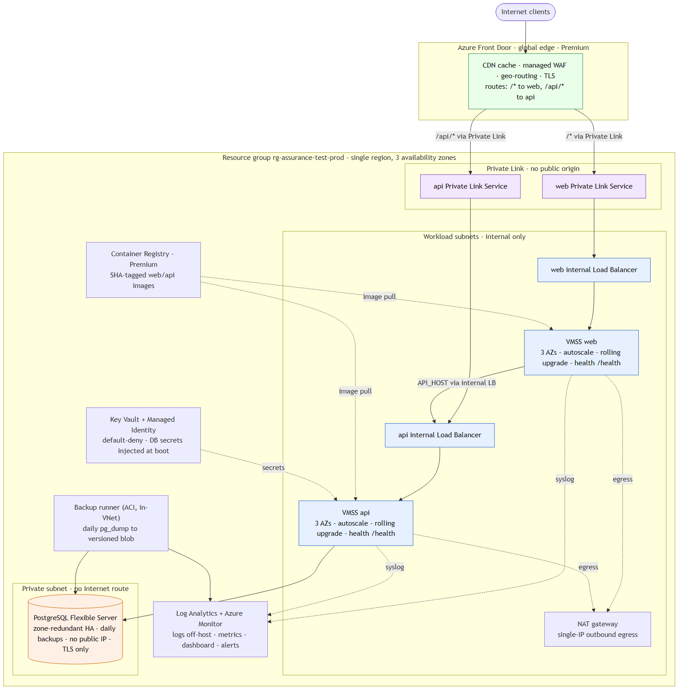

Scalable, secure, self-healing, zero-downtime. On Azure, fully IaC.

| Requirement | Implementation |
|---|---|
| Web and API on the Internet | Front Door routes /* and /api/* to per-tier VMSS behind internal load balancers, reached privately over Private Link |
| Origins never public | Internal load balancers exposed to Front Door only through a Private Link Service; instances have no public IP; a NAT gateway provides outbound egress |
| Database not public | PostgreSQL Flexible Server, private VNet access, NSG-restricted, no public IP |
| Fully IaC | Terraform, remote state with locking, one resource group, three environments |
| Survive instance failure | VMSS across two zones, health probes, auto-repair; zone-redundant database HA |
| Update without downtime | Health-gated VMSS rolling upgrades, SHA-tagged images |
| Automated deployment | GitHub Actions: test, build, apply, rolling upgrade, smoke test |
| Daily backups | Flexible Server point-in-time restore plus an in-VNet pg_dump to versioned blob |
| Logs off-host | Azure Monitor Agent and diagnostics to Log Analytics |
| Historical metrics | Azure Monitor dashboard and alerts |
| CDN by location | Azure Front Door global edge with static caching |
/health; Front Door and the load balancer route only to healthy nodes./health from multiple regions and raises an availability alert on failure.VMSS is the primary because it maps directly to starting, stopping and scaling nodes and keeps the moving parts small. The alternatives show the same architecture on other platforms.